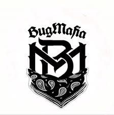

B.U.G. Mafia (an abbreviation for"Bucharest Underground Mafia"), is a Romanian hip hop group from Pantelimon, Bucharest, widely regarded as one of the seminal acts of gangsta rap in Romania. Founded in 1993 as Black Underground, its original lineup consisted of Vlad "Tataee" Irimia, Dragoș "Caddy" (short for Cadillac) Vlad-Neagu and two other members, D.D. and Mr.Nobody, who, by the end of the year, had already departed from the group.[1] Irimia and Vlad-Neagu, who were still teenage high school students at the time, had been working on amateur solo recordings and had little professional prospects on their own prior to their encounter.
Throughout the years, the group endured a long-standing controversy due to the explicit and confrontational nature of their lyrics. Focusing on subjects such as the post-communist Romanian political class, poverty and crime in Romania's communist-built housing projects or their recurring hostility towards Romanian Police, they were subsequently banned from many mainstream T.V. and radio stations in Romania and even at times prevented from touring, spending a night in police custody after their first concert in Drobeta-Turnu Severin in 1997.